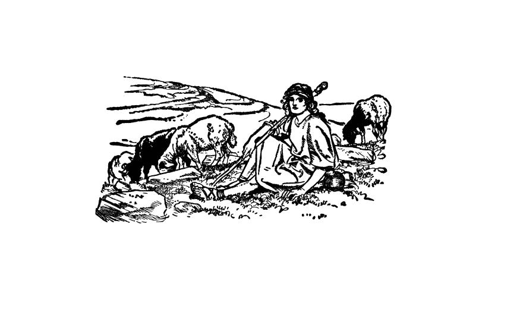

Am Buachaille Buidhe
The fair-haired shepherd - Le pâtre blond
from "An Lon Dubh" (The Blackbird)

Am Buachaille Buidhe 1 * Am Buachaille Buidhe 2
Click to hear the melodies (sequenced by Christian Souchon)
|
To the tune:
As stated at the site "Early Gaelic Book Collections", the "Blair Collection", to which this book belongs, was created toward the end of the 19th century by Lady Evelyn Stewart Murray. To the lyrics The summary of the below song, at the site "Tobar an Dualchais" (www.tobarandualchais.co.uk/fullrecord/94295/1), reads as follows: In this Jacobite song the composer is saddened that the 'Fair-haired Shepherd' has left, and hopes that he will return. This song may be paralleled with the Irish lament An Buachaill Bàn, where Prince Charles Edward Stuart is also addressed as the "Fair-haired Shepherd". |
A propos de la mélodie:
Comme indiqué sur le site "Early Gaelic Book Collections", la "Blair Collection", dont ce recueil fait partie, a été créée vers la fin du 19ème siècle par Lady Evelyn Stewart Murray. A propos des paroles: Le chant ci-après est résumé ainsi sur le site "Tobar an Dualchais" (www.tobarandualchais.co.uk/fullrecord/94295/1): Dans ce chant jacobite, l'auteur est attristé par le départ du 'Pâtre blond' et espère qu'il reviendra. On peut rapprocher ce chant de la complainte irlandaise An Buachaill Bàn, où le "Pâtre blond" représente également le Prince Charles Edouard Stuart. |
|
THE FAIR-HAIRED SHEPHERD CHORUS Far over the mountains, the mountains, the mountains Far over the mountains is the shepherd fair! Far over the mountains, the mountains, the mountains Far over the mountains is the shepherd fair! 1. O he is as fair and he is, aye, as clever And as brave as any lad on earth may be When he left me he promised that he would never, Till the day he dies, love any lass but me. Far over the mountains, etc. 2. 'T was on a gay, delightful, early May morning: I was herding my cattle on Whitedale green, When skylark and thrush with their melodious singing My fair shepherd merrily had ushered in. Far over the mountains, etc. 3. But suddenly came from over the pass orders, From the castle of our Chief, on King's behalf, To Glenfinnan a call on all men to gather: I felt sad to hear that the fair man had left. Far over the mountains, etc. 4. It's in scarlet coats that are dressed King George's soldiers With beautiful ribbons they fasten their hair; Yet the tartan plaid of the Prince's followers, It had become much better my shepherd fair! Far over the mountains, etc. 5. Now I sit alone in front of the rocky hill Despondent, unable to move any more. My heart will not ever rise to pleasure or thrill, Unless the fair shepherd returns to our shore. Far over the mountains, etc. (Transl. Christian Souchon (c) 2015) |
AM BUACHAILLE BUIDHE. SEISD O,'s fada 'sa mhonadh, 'sa mhonadh, 'sa mhonadh Gur fada 'sa mhonadh am buachaille buidhe. O,'s fada 'sa mhonadh, 'sa mhonadh, 'sa mhonadh Gur fada 'sa mhonadh am buachaille buidhe. 1. O tha e cho buidhe is tha e cho bòidheach 'S cho gaisgeil ri òigear tha siubhal na tir; Is thug e dhomh gealladh mu'n d'fhag e mo shealladh, Nach taghadh e leannan ri mhaireann ach mi. 0, 's fada 'sa mhonadh, etc. 2 Bu sòlasach, éibhinn 'san òg-mhaduinn Chéitein, Bhi cuallach na spréidhe air réidhlean Dhail-fhinn: An uiseag 's an smeòrach, 's am buachaille còmhla riu, Gabhail nan òran bha ceòlaireach, binn. 0, 's fada 'sa mhonadh, etc. 3 Ach thàinig fios cabhaig a nall thar a' bhealaich Gu caisteal a' cheannaird, fo cheangal an righ, A' gairm air gach duine bhi triall do Ghleann-fionnain: 'S nuair dh' fhalbh am fear buidhe, bu mhuladach mi. 0, 's fada 'sa mhonadh, etc. 4 Tha còtaichean sgàrlaid air muinntir righ Deòrsa, Is riobainean bòidheach a' ceangal an cinn; 'S tha breacan an fhéilidh air gillean a' phrionnsa, 'S am buachaille buidhe fo uidheam gu grinn. 0, 's fada 'sa mhonadh, etc. 5 'N am aonar a' suidhe air aodann na tulaich, Fo mhulad nach urrainn mi idir chur dhiom; 'S cha 'n éirich mo chridhe ri subhachas tuilleadh Mur till am fear buidhe a rithis do 'n tir. 0, 's fada 'sa mhonadh, etc. Source: An Lon Dubh,(http://digital.nls.uk/80436267) |
LE PÂTRE BLOND REFRAIN Il est au-delà des monts et des montagnes Au delà des montagnes, mon pâtre blond Il est au-delà des monts et des montagnes Au delà des montagnes, mon pâtre blond 1. C'est de tous les jeunes gens qui sont au monde Le plus blond, le plus charmant, le plus vaillant. Il m'a promis, en me quittant, de ne prendre D'autre amie que moi, toute sa vie durant. Il est au-delà etc. 2. C'est par un matin de mai plein de joie vive, Dans les prés de Dalfinn gardant mon troupeau, Que j'entendis les alouettes et les grives Saluer le pâtre blond par un chant nouveau. Il est au-delà etc. 3. Mais dans notre vallée se répand la nouvelle Venant du château du Chef, au nom du roi. Qu'à Glenfinnan tous les hommes se rassemblent Hélas, mon pâtre blond partait loin de moi. Il est au-delà etc. 4. Ceux du roi Georges sont vêtus d'écarlate Et de beaux rubans retiennent leurs cheveux. Pourtant le kilt de tartan de ceux du Prince A mon aimable pâtre blond va bien mieux. Il est au-delà etc. 5. Je suis assise, seule, face aux collines Prostrée et incapable de faire un pas. Mon âme à la joie ne se sent plus encline Tant que le pâtre blond ne reviendra pas. Il est au-delà etc. (Trad. Christian Souchon (c) 2015) |